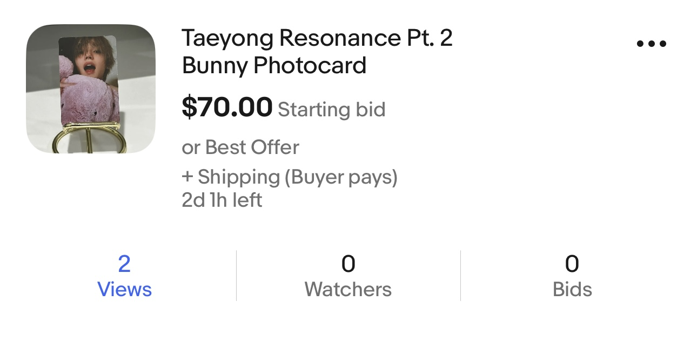
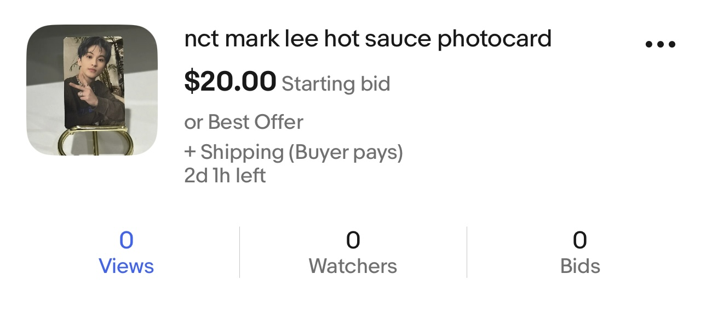
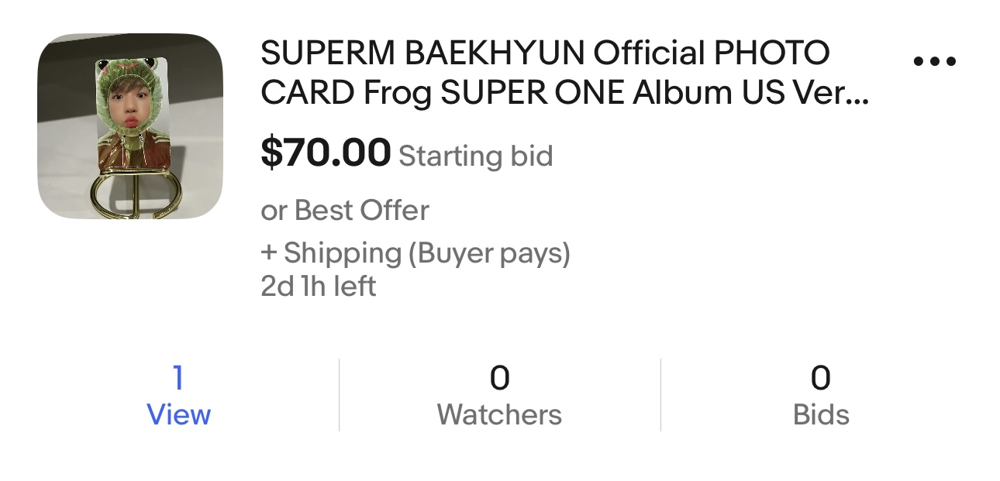

I chose ebay as my platform to sell my kpop photocards because I know of a lot of people trying to sell their kpop albums, photocards, or posters here. Also, I wanted to test the kpop photocards craze and see how the entire selling process works. So I started off by going on ebay to sell the following popular photocards from different boy bands. I first searched each item on ebay to see for how much people were selling at. I decided to sell it at a higher than what it was selling for. I was only able to put my photocards on sale for 2 days as I didn't have my photocards with me earlier. I will be breaking down the photocards I put up for sale so it's easier to follow along.
I saw that this photocard was being sold for $40~60, so I decided to sell it for $70 to see if people buy it. Although I couldn't sell it, I feel like if I had more time then I could get more people to view it as I was able to get 2 views in 2 days.
I saw that this photocard was being sold for $12, so I decided to sell it for $20 to see if people buy it. I couldn't sell this one and couldn't get people to view this item as it's not that popular compared to my other photocards I'm selling. 
I saw that this photocard was being sold for $40~60, so I decided to sell it for $70 to see if people buy it. Although I couldn't sell it, I feel like if I had more time then I could get more people to view it as I was able to get 1 view in 2 days.
In conclusion, I couldn't sell any of my photocards as I made two mistakes. If I could redo this assignment, I would change the pricing of these photocards to be lower than the items that are were already up on ebay by others. This way I could sell my photocards before those. Moreover, I would put up my ebay listing earlier so it can attract more viewers. Overall, it was a fun experience and if I could resit then I will definitely implement the above.